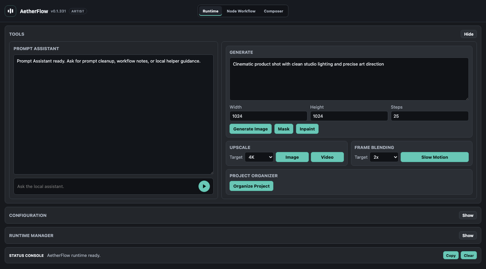
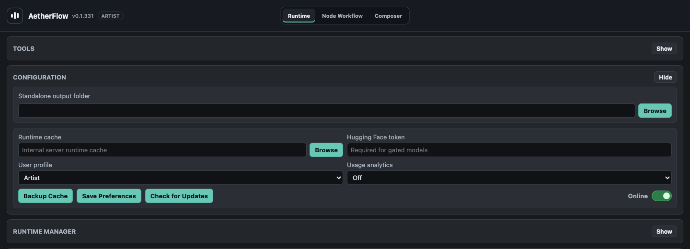
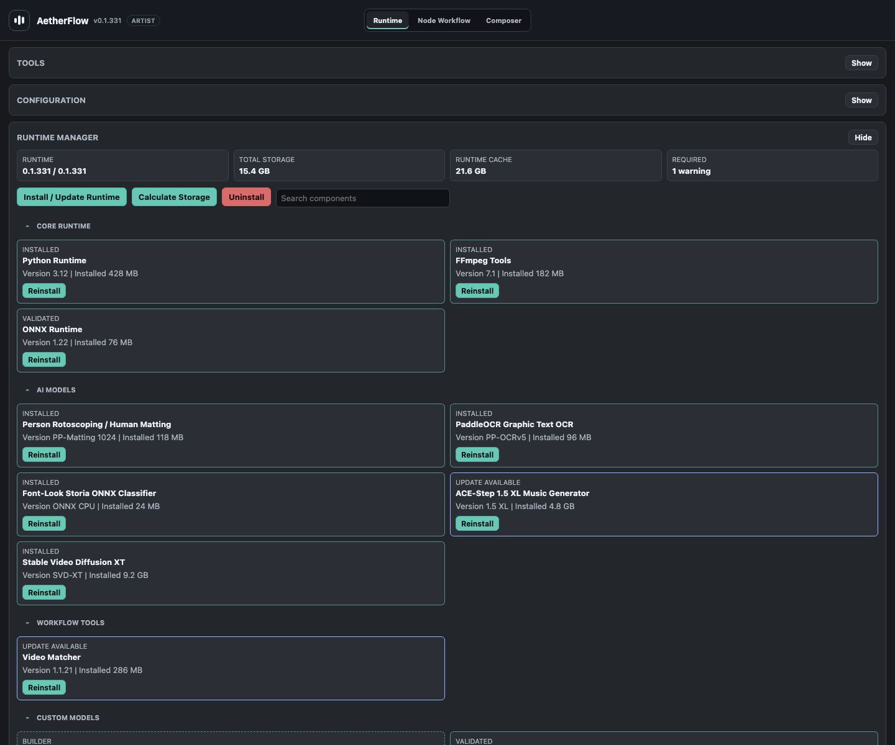
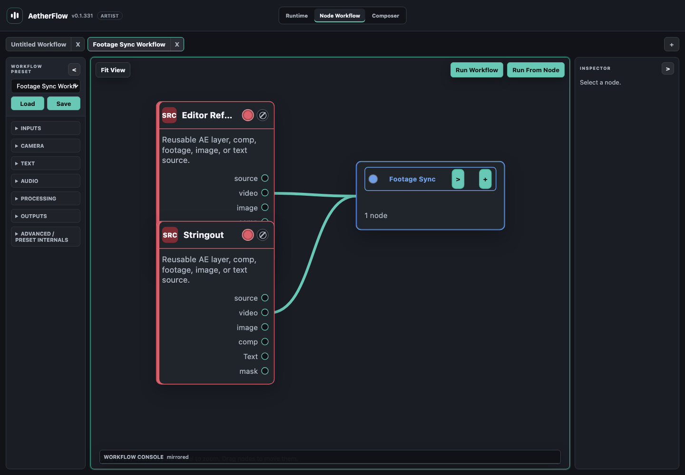

Online mode
Uses the configured runtime cache first, then downloads missing approved components when needed.
Public documentation
Install the extension, configure local runtime components, and run artist-facing AI workflows directly inside After Effects.

Install
AetherFlow ships as a ZXP extension. Large runtime pieces are installed afterward through Runtime Manager.
AetherFlow_CEP.zxp from the latest release.Window > Extensions > AetherFlow.Install / Repair Runtime.Runtime
Runtime Manager keeps the ZXP small and lets connected or restricted machines use the same workflow surface.
Uses the configured runtime cache first, then downloads missing approved components when needed.
Installs only from the configured runtime cache and does not use public internet fallback.
Workflows
Rebuild reference graphics as editable After Effects precomps using OCR, templates, and post-process controls.
Connect source, color, cache, viewer, composite, runtime model, and export nodes into reusable pipelines.
Run local cleanup, upscaling, slow-motion, and native plugin-assisted workflows where installed.
Install, repair, mute, remove, and verify local models, style packs, encoders, optional services, and native plugins.
Screenshots



Network
https://danrac.github.io/AetherFlow_CEP/
https://danrac.github.io/AetherFlow_Docs/
https://github.com/danrac/AetherFlow_Releases/releases/
https://github.com/danrac/AetherFlow_Releases/releases/download/
https://objects.githubusercontent.com/